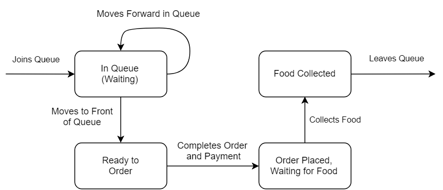

Shop State Diagram
This shows the different states of the shop.
The top diagram shows the states for the traditional queue while the bottom diagram shows the states for the modified queue.

This page contains several state diagrams which help to explain the flow of the customer and store processes, both in the First-Come-First-Serve and Tandem Queues. It also contains diagrams (IDEF0 and Functional Flow) on how we designed our simulation model in order to match these processes.
This shows the point different states from the customer's point of view.
This shows the different states of the shop.
The top diagram shows the states for the traditional queue while the bottom diagram shows the states for the modified queue.
This is the IDEF0 representing our simulation. After setting the required parameters, we input how many runs (repititions) we want to run, and the output will be the average lead time of customers.
A3 shows what happen when we call 1 run of the simulation. Using the generated interarrival and serivce times, it will simulate a non-peak simulation with a cold start and get the queue length after the specified time. After which, it will use that length to initialise the queue for the peak period simulation. This is to account for different queue lengths affecting the simulation (discussed later in Experimental Design and Experimental Runs).
Functional Flow Diagram for the Simulation Code itself to explain the logic behind each iteration.